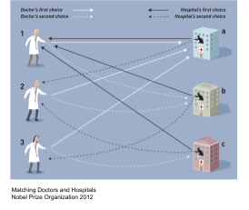
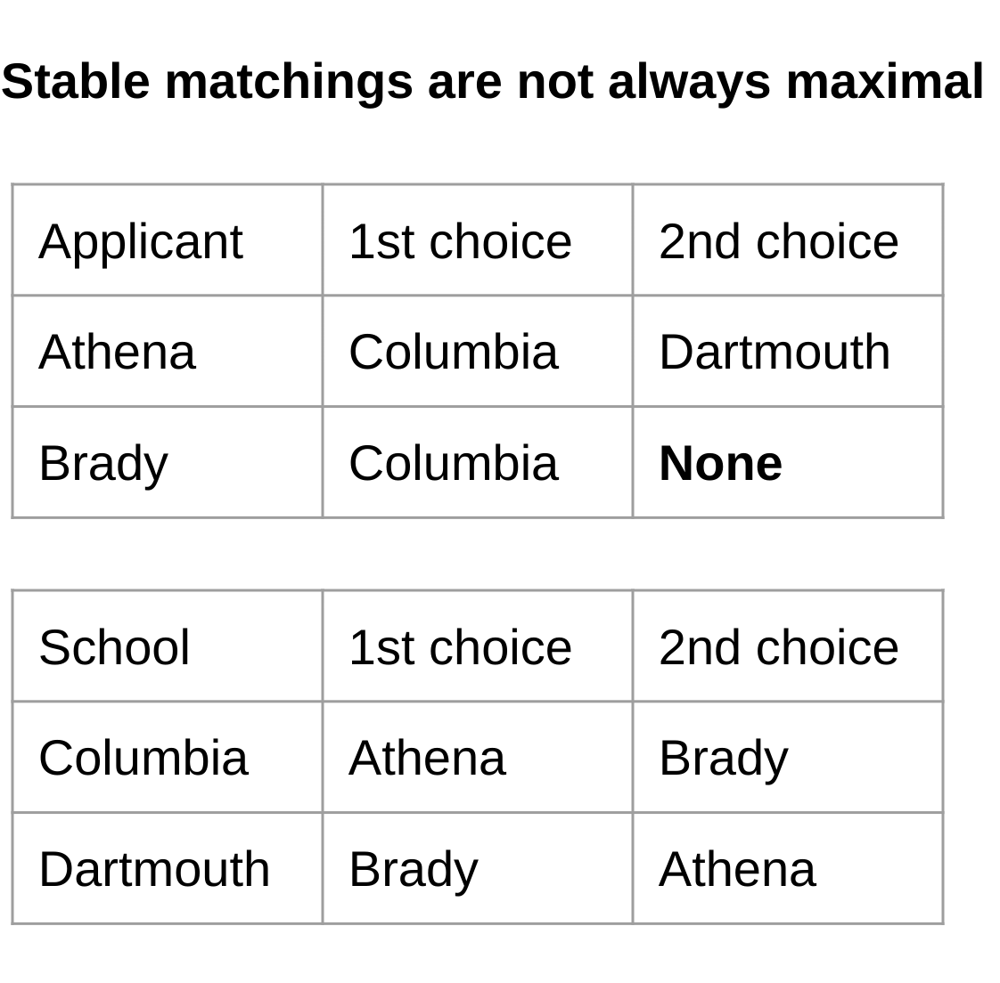
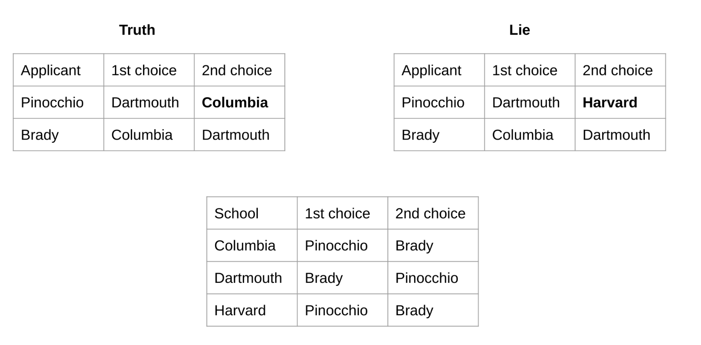
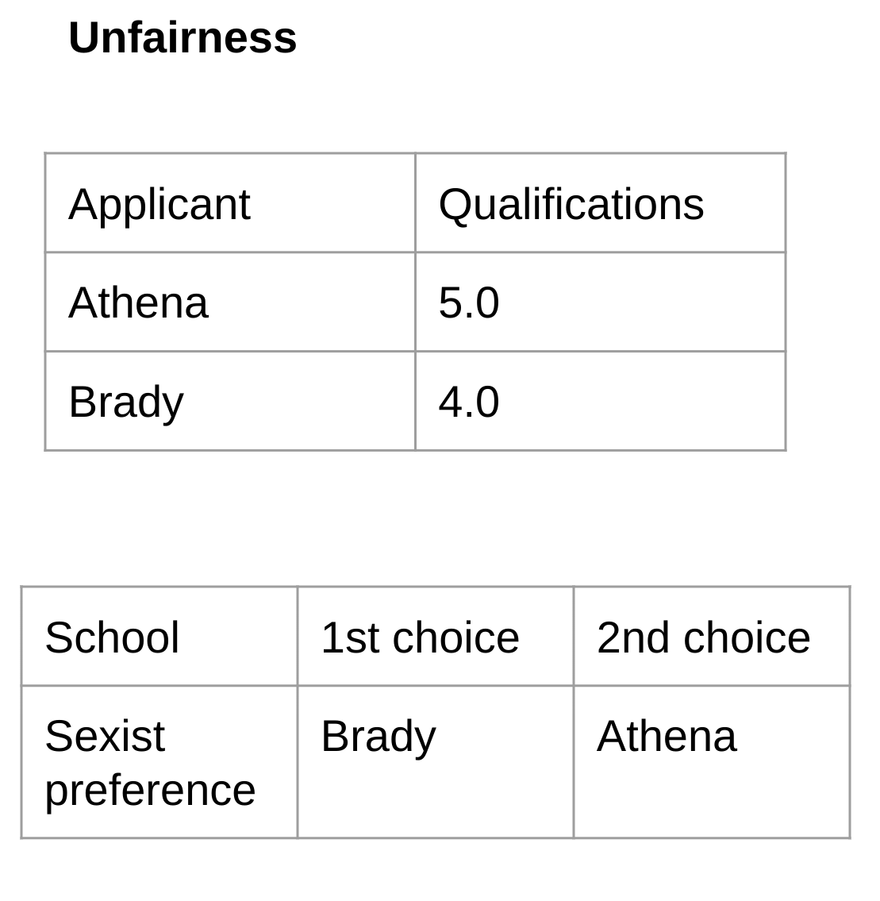

The Best Match
Introduction
Can computers be wrong? Unfair? Usually we think of computers as perfectly logical and unbiased machines. This trust can be seen in the large role that technology plays in making decisions that impact our lives. Examples of major decisions that are either made by computer or computer assisted include recommending healthcare treatments, handling job and college applications, selecting advertisements to display, deciding where to station police in a city, and deciding whether to give a loan out (Haasdijk 2022). Algorithms are incredibly powerful tools that have led to many improvements in quality of life. But sometimes computers aren’t perfect. If a construction worker has a powerful tool but doesn’t completely understand how it works, it is inevitable that they will eventually misuse the tool. If the tool is used in the wrong location there may be unexpected harmful implications. Likewise, there is much evidence (e.g. Haasdijk et al. 2022, Castera et al. 2022) that many algorithms used in practice can have unexpected biases, for instance, discriminating based on sex or race which can be immoral and illegal. “Matching” is the epitome of a computational problem where algorithms have changed the world for the better. Matching concerns finding pairings between two groups; for instance, matching applicants and colleges, doctors and hospitals, or even kidney donors to compatible recipients (Nobel Prize Scientific Report 2012). However, are the classical solutions really perfect? What challenges and limitations are there? We argue that the limitations exhibited by matching algorithms demonstrate the crucial importance of prioritizing transparency and regulation of algorithms as they continue developing.
Stable Matching
Athena and Brady are applying to universities. Athena is incredibly bright and her application highlights her many academic achievements. She hopes to go to Columbia to study business, and has applied to Dartmouth as a backup. Brady on the other hand has less academic achievements, but no smaller ambitions. Brady also happens to shine as a football star, and knows that many colleges would be very happy to have him on their school’s football team. However, he isn’t that interested in playing football at college, his main focus is on becoming a successful businessman. Columbia and Dartmouth both only have one spot. The figure to the right depicts the situation with the applicant preferences in the first table and the school preferences in the second table. This example illustrates many of the challenges of matching: for example, Bob and Athena have competing interests so they can’t both get their first choice. Another challenge is that there is no “best” candidate who should get first pick of school: Bob and Athena have different skills, and Dartmouth prefers Bob because of his football prowess while Columbia prefers Athena for her intellectual genius.
The celebrated solution to the matching problem is known as “Stable Matching”. The stable matching algorithm has been so influential that Roth and Shapley earned the 2012 Nobel Prize in Economic Sciences for work on matchings. Stable matching is widely used to solve problems; for instance, matching applicants to schools and doctors to hospitals. “Stability” is one way of formulating what it means for a matching to be good. In the college admissions example from above, a matching is said to be “unstable” if there is some “student A” that prefers “university X” to their matched university, while university X also prefers student A to their matched student. In an unstable match both sides are unhappy, and if they are free to do so will reorganize the matching, i.e. university X will accept student A instead of their current student. An unstable match is an economic indicator of “inefficiency”, and an indicator that we should strive to find stable matches. A stable matching is generated, roughly speaking, by executing swaps of the matching until at least one party in each match is relatively content with their match, at which point they would refuse future swaps. Returning to Athena and Brady, a stable matching would be Columbia—Athena, Dartmouth—Brady: although Brady wants to go to Columbia, Athena gets admitted because Columbia prefers Athena. Somewhat surprisingly, a stable matching is always possible and can be computed efficiently. The first algorithm for the problem is due to Gale and Shapley, and consists of a series of rounds carried out by the computer. College applications are more complicated than stable matches; however, the language of college applications gives a simple framework for explaining the ideas behind matching. Stable matching starts by both sides submitting their preferences. The rest of the work is all done by simulations on a computer. In particular, the computer simulates a series of rounds where:
 Universities with space left request their favorite student who hasn’t already declined a request from this university. Requested students hold on to their favorite offer so far, tentatively accepting it but hoping for a better offer in the future, and reject all inferior offers. The process repeats until the universities have all been matched, or had their offers declined by all the students on their lists. (Austin 2018) Concerns Stable matchings solve a hard problem, in a remarkable way. Roth, one of the Nobel Prize recipients, discovered extensive empirical evidence that stable matchings are highly desirable. For the resident hospital problem Roth found “[algorithms] which resulted in stable matches … turned out to be successful, whereas … other algorithms had broken down in various ways”(Nobel Prize Press Release 2012). However, stable matchings are not without flaw; in some situations they might not be the right tool for the job. A number of recent studies (e.g. by Karni et al 2022, Alimudin et al 2022, Cooper et al 2020) investigate unforeseen consequences of stable matchings, and discuss potential solutions. I believe the following questions are important to address: There are many possible matchings. Do stable matchings match as many people as possible, i.e. are they maximal? Do stable matchings do the most good overall? How much are stable matchings influenced by an individual’s preferences? Can an individual benefit from lying about their preferences? Are stable matchings fair? In other words, is it possible in a stable match for highly qualified people to achieve less desirable matches than less qualified people? We argue that stable matchings don’t always achieve these criteria to satisfactory levels. This demonstrates the importance of understanding algorithms and not applying them incorrectly.
Maximality  One metric for determining the quality of a matching is how many people it matches. Generally it is preferable to match more people. However, it turns out that matching more people can sometimes be incompatible with stability. In a 2018 presentation on “Stable Matchings: in Theory and in Practice” Professor Rastegari explains that stable matchings can vary in size and can be as far as a factor of two off of the maximal size. As a simple concrete example, imagine that we modified the school application situation with Brady and Athena to be the figure on the right. Here, Brady decides not even to apply to Dartmouth. He is effectively saying, “if I don’t get into Columbia, then I’m just not going to go to college”. In this situation the only stable match is Athena—Columbia, Bob—nowhere. And depending on the situation this could be the right thing to do; potentially the unfairness introduced by allowing unstable matchings is unacceptable in certain applications. On the other hand, there is a maximal matching of Athena—Dartmouth, Bob—Columbia. This maximal matching is unstable, but maybe that is ok, for instance if Athena is fairly ambivalent between going to Dartmouth and Columbia and only slightly prefers Columbia. Or maybe the social benefit of having an extra person attend college outweighs the slight negative effect felt by Athena. In situations where stability is less critical, introducing a small amount of instability in order to create the possibility for a much larger stable matching may be desirable. Another similar metric for determining the quality of a match is the total amount of benefit it provides people. For instance, sending an underprivileged student to a top university may provide them more benefit than a stellar student from a privileged background would gain with the same opportunity, as the experience has greater potential to completely change their life. In this case it is possible that a non-stable matching is desirable if it is better at achieving the goal of maximizing benefit to people. Matching is clearly a very nuanced problem, and much thought needs to be put into the design of an appropriate matching algorithm for different situations.
Lying  When applying to colleges, students cannot control how much colleges prefer them. However, students are in control of the preference list that they submit. Could it ever be in a student’s benefit to lie about their preferences? At first glance, the answer seems to be no: pretending to not want to go to a university that you really do want to go to should make you less likely to get in there. However, in 1982 Roth proved the following disheartening result: “No stable matching mechanism exists for which truth-telling is a dominant strategy for every agent.” In other words, it is difficult to directly eliminate incentives to lie with stable matchings. Consider the above example where Brady and Pinocchio (who is prone to lying) are competing for spots at three universities. If Pinocchio tells the truth, then Columbia and Harvard will extend offers to him, he will tentatively accept Columbia’s offer, and then Dartmouth and Harvard will extend offers to Brady who will accept Dartmouth’s offer. However, if Pinocchio instead lies, and rejects Columbia in favor of Harvard, with no intention of actually going to Harvard, then Columbia and Dartmouth will give offers to Brady. Brady happily accepts Columbia’s offer, and then Dartmouth extends an offer to Pinnochio who also happily accepts. The adage “liars never win” is therefore false for stable matchings: by lying Pinnochio was able to get his top choice! In practice however, the potential incentive for lying is not this severe. Professor Austin explains that with an appropriate stable matching scheme schools are incentivized to lie, but not students. Schools however can be prohibited from lying by legally regulating their preferences to be transparent, e.g. not discriminating based on race (Haasdijk, 2022). Nonetheless, the possibility of lying is further evidence for the complexity of matching and the care that must be taken in developing an appropriate solution.
Fairness  Stable matchings are “economically efficient”, but are they fair? Karni et al. in their 2022 work “On Fairness and Stability in Two-Sided Matchings” define fairness as follows: “students with a GPA of 5.0 should be assigned to a prestigious [school] with the same probability, and students with a GPA of 4.0 can be assigned to that prestigious [school] with a lower probability”. Defining fairness rigorously is quite challenging due to the fact that many factors influence how qualified an individual is, but fairness captures the intuitive notion that more qualified students should not envy positions obtained by less qualified students. In stable matchings there are two ways that fairness can fail. First, if preferences by the schools are unfair, as depicted on the right, then the outcomes determined by stable matching will likely also be unfair. More subtly, Karni et al. show that even when hospital preferences are based on qualifications of students unfairness can still exist in stable matchings. Algorithms have the potential to eliminate human biases. However, to accomplish this much work needs to be put into the algorithm design.
Conclusion In summary, stable matchings have clearly substantially improved the lives of many. However, there are limitations to stable matchings and many challenges in finding the right matching algorithm for a certain situation; some challenges include questions of whether maximality, lying and fairness are requirements. Further research on matchings will be valuable. More generally, as computers become increasingly powerful and play increasingly large roles in our lives, it is crucial that we understand what they are doing. Recently Artificial Intelligence technologies, powered by big data, neural networks, hype and unicorns, have been exploding. There are massive breakthroughs regularly in the news. However, these algorithms, like matching, need scrutiny. An AI model used widely in the US to predict whether a criminal will re-offend “turned out to be biased against black people” (Haasdijk 2022). Another study found that widely used clinical software for deciding whether patients needed care exhibited a similar bias: “Black patients had to be deemed much sicker than white patients to be recommended for the same care”. The technology races forward like a train with an incredible momentum. Some are calling for the train to slow down, to make sure that issues of transparency and fairness are considered. We need to make sure that these calls do not go unheard!
References Alimudin, A., & Ishida, Y. (2022). Matching-Updating Mechanism: A Solution for the Stable Marriage Problem with Dynamic Preferences. Entropy (Basel, Switzerland), 24(2), 263. https://doi.org/10.3390/e24020263
Austin, D., (2018). “The Stable Marriage Problem and School Choice”. Ams.org. http://www.ams.org/publicoutreach/feature-column/fc-2015-0
Castera, R., Loiseau, P., & Pradelski, B. S. (2022, July). Statistical Discrimination in Stable Matchings. In Proceedings of the 23rd ACM Conference on Economics and Computation (pp. 373-374).
Cooper, Frances & Manlove, David. Arxiv (2020). “Algorithms for new types of fair stable matchings.” https://arxiv.org/abs/2001.10875
Gale, D.; Shapley, L. S. (1962). “College Admissions and the Stability of Marriage”. American Mathematical Monthly. 69 (1): 9–14. doi:10.2307/2312726. JSTOR 2312726.
Haasdijk, Evert (2022). “A call for transparency and responsibility in Artificial Intelligence”. https://www2.deloitte.com/nl/nl/pages/innovatie/artikelen/a-call-for-transparency-and-responsibility-in-artificial-intelligence.html
Karni, G., Rothblum, G. N., & Yona, G. (2022). “On Fairness and Stability in Two-Sided Matchings”. In 13th Innovations in Theoretical Computer Science Conference (ITCS 2022). Schloss Dagstuhl-Leibniz-Zentrum für Informatik. https://arxiv.org/abs/2111.10885
Nobel Prize Organization (2012). “The Prize in Economic Sciences 2012”. NobelPrize.org. https://www.nobelprize.org/prizes/economic-sciences/2012/summary/ https://www.nobelprize.org/uploads/2018/06/popular-economicsciences2012.pdf
Palmer, C., & Pálvölgyi, D. (2022, February). At most 3.55 n stable matchings. In 2021 IEEE 62nd Annual Symposium on Foundations of Computer Science (FOCS) (pp. 217-227). IEEE. https://arxiv.org/abs/2011.00915
Rastegari, Bahar (2018). “Stable Matchings: in Theory and in Practice”. https://project.dke.maastrichtuniversity.nl/easss/wp-content/uploads/2018/07/EASSS_Tutorial.Stable_Matchings.Web_.pdf
Roth, A.E. (1982). The economics of matching: Stability and incentives, Mathematics of Operations Research 7, 4, pp. 617–628